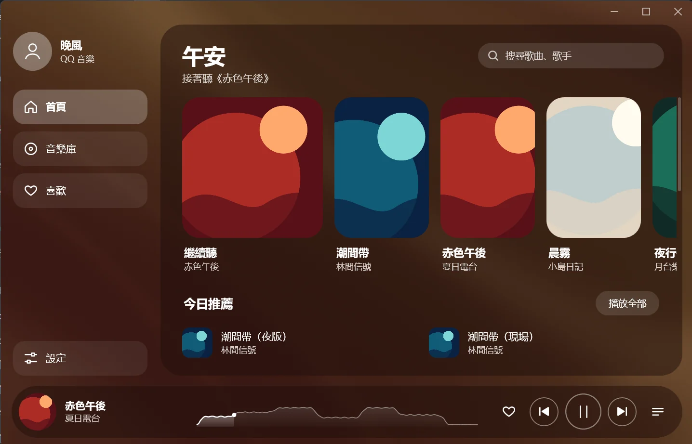
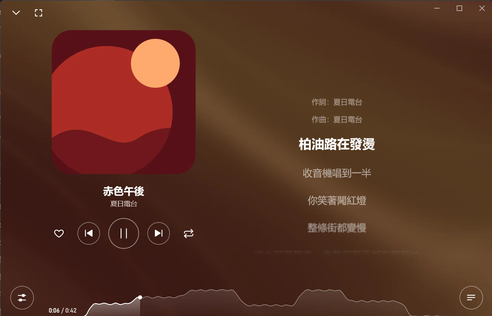
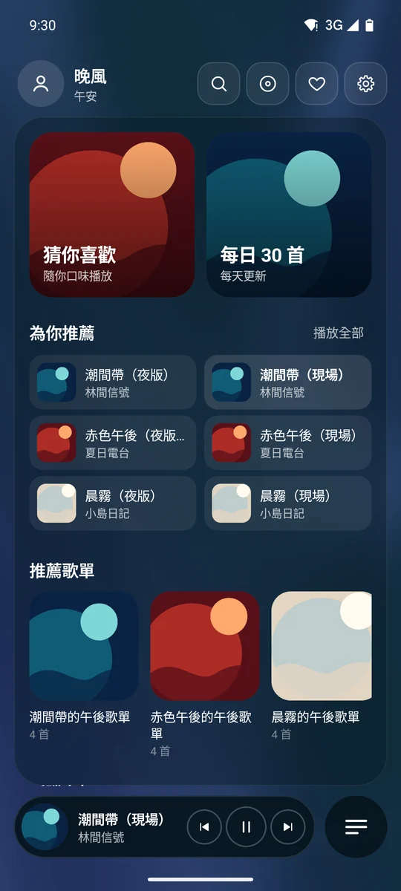
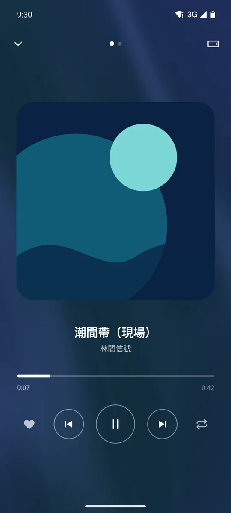
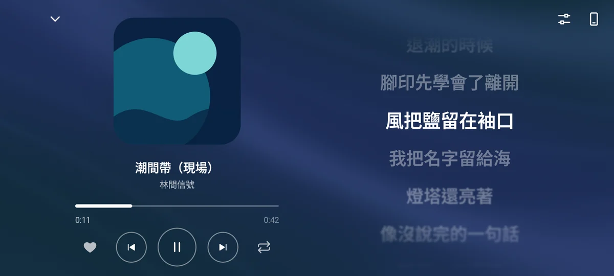

換一張封面
0:00 / 0:42
取色
封面是什麼顏色，
封面是什麼顏色，
絲音就是什麼顏色
每換一首歌，絲音從封面取出深底、第二色調和光澤三種顏色，鋪成整個視窗流動的絲綢。遇到淺色封面，文字會換成深色，照樣看得清楚。
深底#000000
第二色調#000000
光澤#000000
歌詞
歌詞一行一行地呼吸
唱到哪一行，哪一行就亮起來，下面的行像被輕輕拉著跟上，離得遠的字慢慢模糊。點一行，就跳到那裡。
兩端
Windows 與 Android，同一種顏色
電腦上是寬敞的視窗和畫出整首歌響度的波形；手機上是浮在底部的播放膠囊，橫過來就能邊看封面邊看歌詞。





Windows
播放器、設定和播放清單都在一個視窗裡。關掉視窗後留在系統匣繼續播放，工作列和鍵盤上的媒體鍵都能控制。
Android
主頁四顆按鈕直達搜尋、音樂庫、喜歡和設定。播放時通知欄和鎖屏都有控制，橫屏模式隱藏狀態列，讓歌詞佔滿整個高度。
細節
那些細小的地方
藍牙延遲微調
歌詞以 0.1 秒為單位提前或延後，每副耳機、每個喇叭各記一份。
掃碼登入
用 QQ、微信或 QQ 音樂 App 掃一下就登入。手機上可以先把登入碼存進相簿再識別。
波形進度條Windows
進度條畫的是整首歌的響度，副歌在哪裡一眼就看得到，可以有波紋、條形和普通三種樣子。
橫屏播放器Android
左邊封面和控制，右邊歌詞。豎屏和橫屏的字體大小、對齊方式各記一份。
點歌手名，去歌手頁
播放器裡的歌手名可以點；合唱的歌會先讓你選是哪一位。
放不了的歌自動跳過
遇到帳號沒有權限的歌，安靜地跳到下一首，不卡住，也不會有雜音。
音質自己選
最高可用、320K 或 128K。拿不到你選的音質時，自動退回較低的一檔。
首頁想看什麼自己定
推薦、歌單、新碟這些區塊可以分別開關；絲綢光效和面板質感也能調。
下載
下載絲音
絲音本身不提供歌曲。登入你自己的 QQ 音樂帳號後才能聽歌，能播放的歌曲和音質以帳號的權限為準。